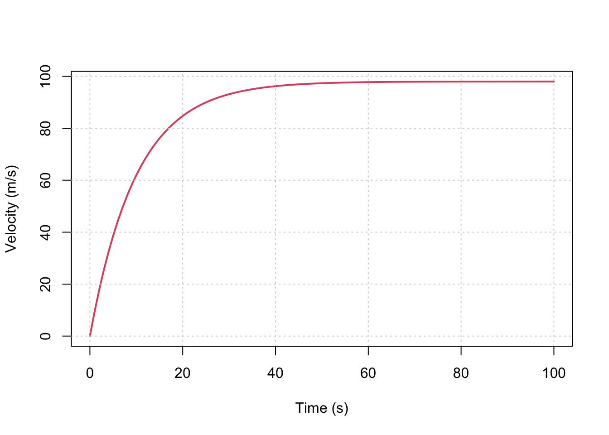

Chapter 1 建模方法
本章极少数值方法建模的基本方法论，涉及一些基础的建模思路和数学基础。
1.1 建模基本思路
- 描述物理过程，形成概念模型（或认知模型）(Conceptual Model, or Mind Model)
- 使用物理规律(Physical Laws)
- 列出合理假设，简化问题 (Assumptions)
- 使用数学公式表达物理规律和假设(Math equations)
- 求解数学公式(Solver)
求解数学公式的过程，可以尝试寻找其解析解(Analytical solution)，也可以使用数值方法求得数值解(Numerical Solution)。
数值方法本质上是对离散（非连续）时空模型中因变量(Dependant variable)分布和变化的数学近似描述，从理论的解析解到数值解虽然损失了精度，但解析解通常无法求得，而数值方法可给出误差可接受的近似解。
案例：自由落体运动
描述 问题描述下图。
自由落体运动示意图
问题：任意\(t>0\)时刻的速度，即\(v(t) = ?\)。
建模步骤：
认知模型：
自由落体运动
物理定律：
牛顿定律： \(F = ma\)。
假设：
\(v(t=0) = 0\)
且
\(F_{drag}(t) \propto v(t)\)，即\(F_{drag} = cv\)。
数学公式：
由\(F = ma\)和\(\frac{dv}{dt} = a\)可得：
\[\tag{1} \frac{dv}{dt} = a = \frac{F}{m}\]
根据物体受力分析, 其受到向下的重力\(F_{g} = mg\)和向上的空气阻力\(F_{drag} = cv\)，空气阻力在此假设与物体运动速度成正比关系。则其受力平衡公式为： \[\tag{2} F = F_{g} - F_{drag} = mg - cv\]
综合公式（1）和（2），则得到： \[\tag{3} \frac{dv}{dt} = g - \frac{c}{m} v\]

自由落体运动的受力分析
公式求解：
初始条件：\(v(0) = 0\)
积分求解(解析解)： \[v(t) = \frac {mg}{c}\left[ 1- exp(-\frac{c}{m}t) \right]\]
结果绘图：
c = 15 # drag coeefficient
g = 9.8 # Gravity
m = 150 # Mass in kg
x = seq(0,100, 1) # Time
y = m*g/c *(1 - exp(-1 * c / m * x)) # Vecocity
plot(x, y, type='l', xlab='Time (s)', ylab='Velocity (m/s)', col=2, lwd=2);
grid()
变量表:
- \(v(t)\) - 随时间变化的物体速度
- \(m\) - 物体质量
- \(g\) - 重力加速度
- \(a\) - 物体运动的加速度
- \(c\) - 空气阻力系数
- \(F\) - 物体所受的力
- \(F_{g}\) - 重力
- \(F_{drag}\) - 空气阻力